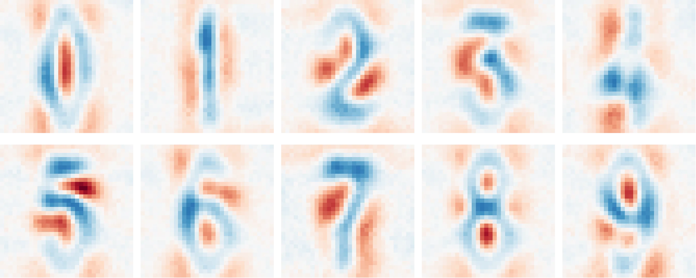

Introduction
This book serves as an informal tutorial to \(\chi\)-nets, a natively decomposable and interpretable family of neural networks. These networks replace ordinary activation functions with compositional counterparts, making them analytically transparent while retaining their expressiveness. This also enables exact computation of interactions between any part of the model.

The above image depicts salient interactions between inputs and output of a multi-layer image model.1 These images are extracted from the weights alone, requiring no input dataset or extra information. Compositional networks make several open problems in interpretability tractable.
Directly interpreting weights
Input-based (activation-based) interpretability might miss important behaviour a model has learned, even when considering the full training dataset. Hence, they cannot be used to make important guarantees about what a model knows and doesn't.
Analysing the weights directly provides a comprehensive view into model internals without relying on potentially unrepresentative inputs.
Globally decomposing models
It's impossible to describe how changing a given subspace, either in the activations or weights, impacts an ordinary model. Extracted features, either with supervised (probes) or unsupervised (dictionary learning) techniques, have no guarantees about their utility downstream. This means a combination of ablations and qualitative analysis is required to understand what a feature does.
For compositional networks, the downstream impact for any feature can be computed exactly. This can be used to order subspaces in the weights by global importance, just like SVD does for a linear model.
Summary
In short, many metrics become tractable (and even fast) to compute. While this can be used toward deep learning science, this book focusses on their interpretability. We refer to such methods under the umbrella name of 'compositional interpretability'.
-
Specifically, this is a 3-layer model trained on the street-view house number (SVHN) dataset. ↩